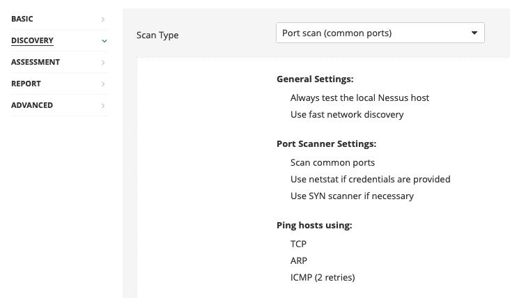

⚙️ Nessus - Configurazione Avanzata
Host Discovery:
• Abilitare scan per dispositivi fragili
• ⚠️ Attenzione: stampanti di rete potrebbero stampare fogli di carta con testo garbage

Port Scanning:
• Common ports
• All ports
• Custom range

Service Discovery:
• Probe all ports per trovare servizi (abilitato di default)
• Identificazione servizi SSL/TLS
• Identificazione certificati in scadenza o revocati

• Abilitare web app scanning se richiesto
• Custom user agent
• URL per test RFI (Remote File Inclusion)
• Opzioni di crawling personalizzabili

Autenticazione:
• Tentativo con credenziali fornite
• Brute-force con liste custom
User Enumeration:
• RID Brute Forcing
• Starting/Ending UIDs configurabili

Safe Checks: Abilitato di default - previene check che potrebbero impattare negativamente il target
Throttling: Rallenta la scansione se viene rilevata congestione di rete
Stop Scan: Interrompe la scansione di host che diventano non responsivi
Random Order: Scansiona gli IP target in ordine casuale